Kent · Medway · Thames Estuary
Traditional shipwrights for classic and working boats.
Structural timber, decks, caulking and fine joinery. Plus custom-made blocks and rig fittings, turned and finished by hand in our own workshop.
What sets us apart
Custom block making
Very few yards still make blocks. We do, from scratch, to your rig and your loading: shell, sheave, pin and strop.
Turned in ash, elm or mahogany, finished with oil or varnish, and built to be worked rather than admired. We make single, double and triple blocks, snatch blocks, fiddle blocks and deadeyes, and we will match an existing set so a repair does not look like a repair.
Send us a photo and a measurement and we will tell you what is possible.
Talk to us about a block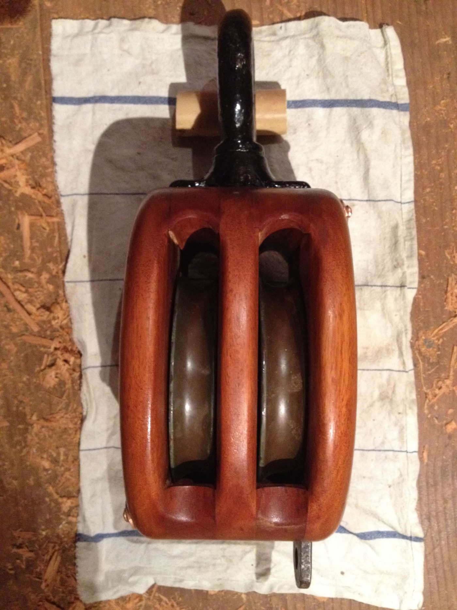
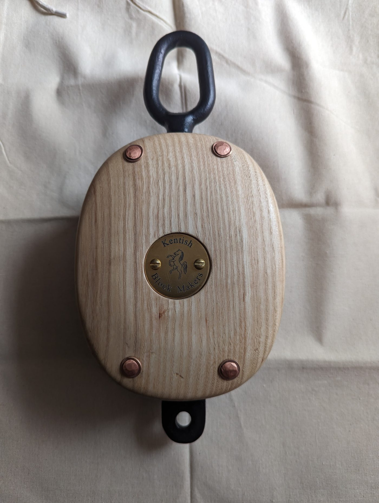
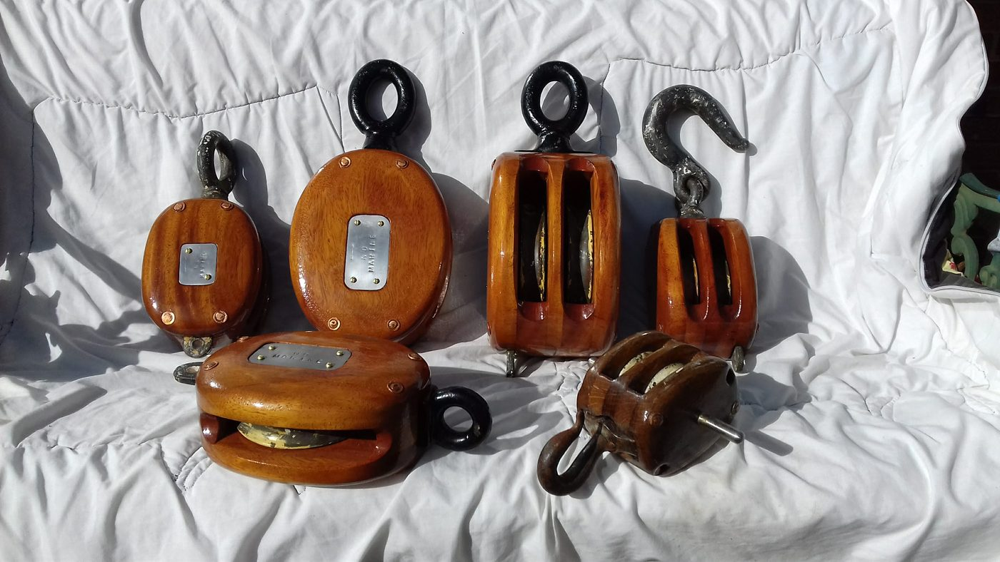
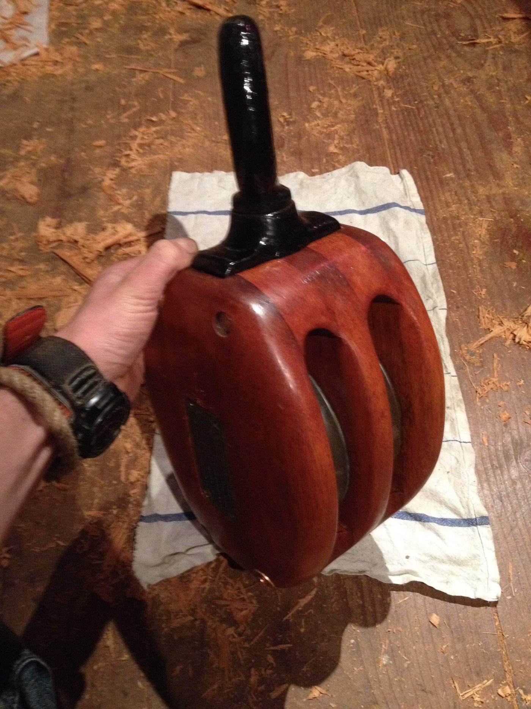
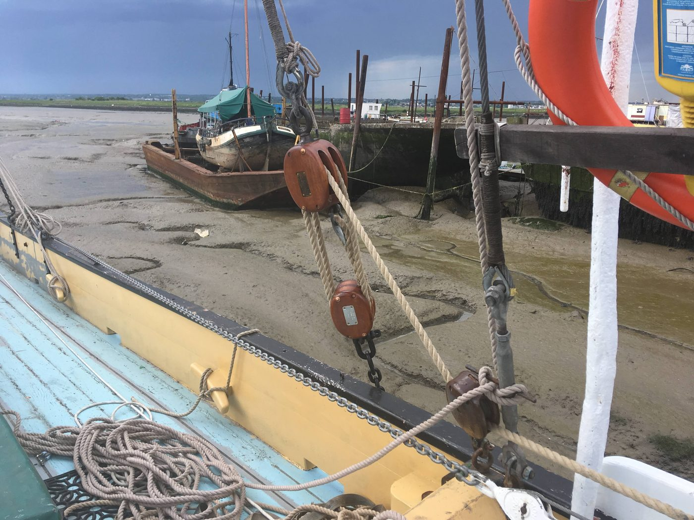
Services
We look after every part of the vessel
From a single sprung plank to a full winter refit. We work in traditional materials and methods, because on a wooden boat they are still the ones that last.
Structural timber & hull repair
Planking, frames, futtocks, stem and stern work, keel repairs and scarfed-in replacements matched to the original timber.
Decks & deck furniture
Laid and payed decks, kingplanks, coamings, hatches, skylights and companionways.
Caulking
Oakum and cotton caulking, hardened and payed properly. Seams that stay tight through a season.
Fine joinery & interiors
Cabin soles, bulkheads, berths, lockers and trim, hand-finished to sit right in a boat that moves.
Rigs & fittings
Spars, gaffs, booms, cleats and bespoke blocks. Made and fitted to suit how the boat is actually sailed.
Maintenance & winter refits
Full-service maintenance so you can turn up and sail. Mobile call-outs, afloat or on the hard.
Recent work
Our work in wood
From full restorations to fine detailing. A selection of what has been through the yard and the workshop.
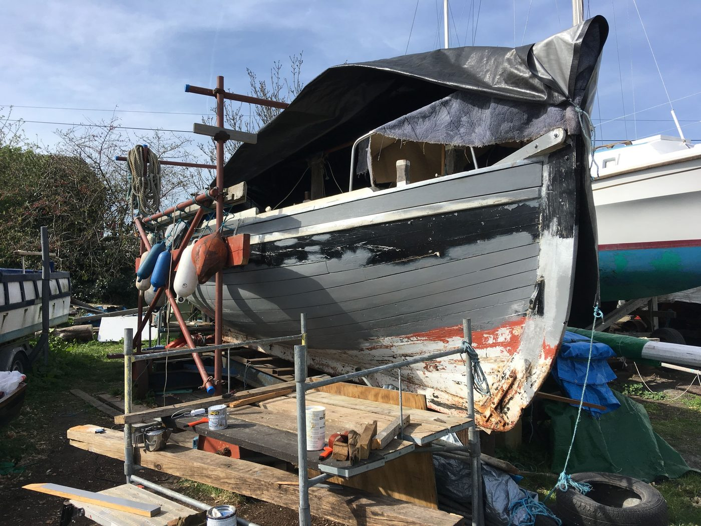
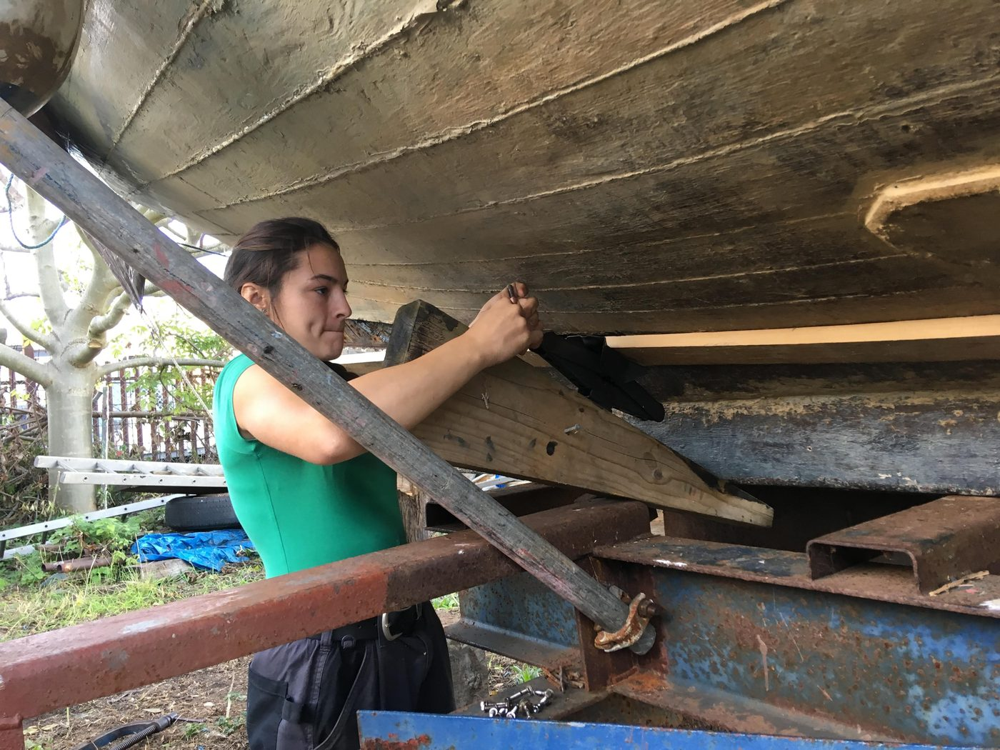
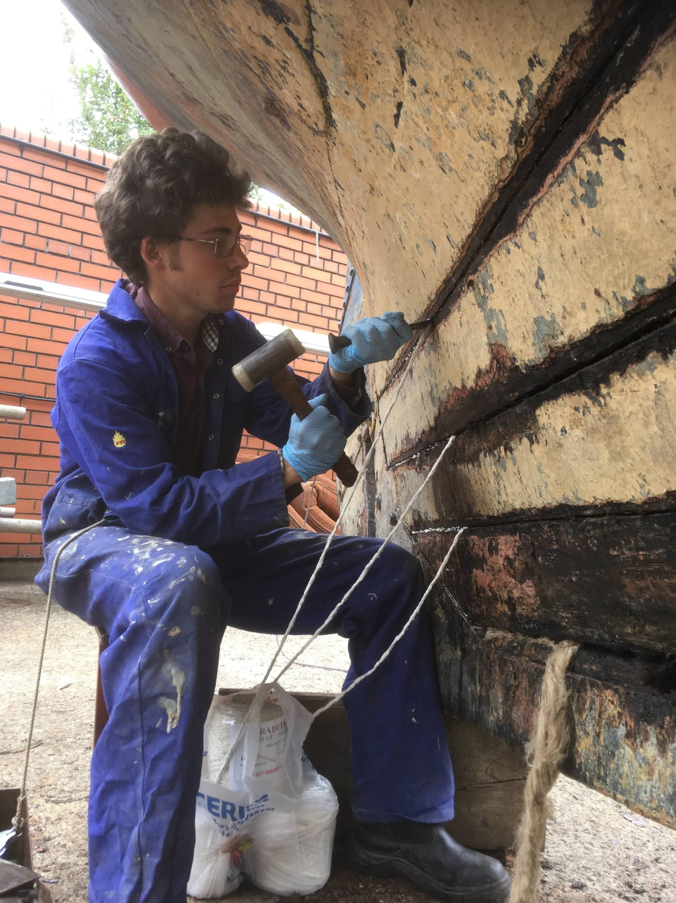
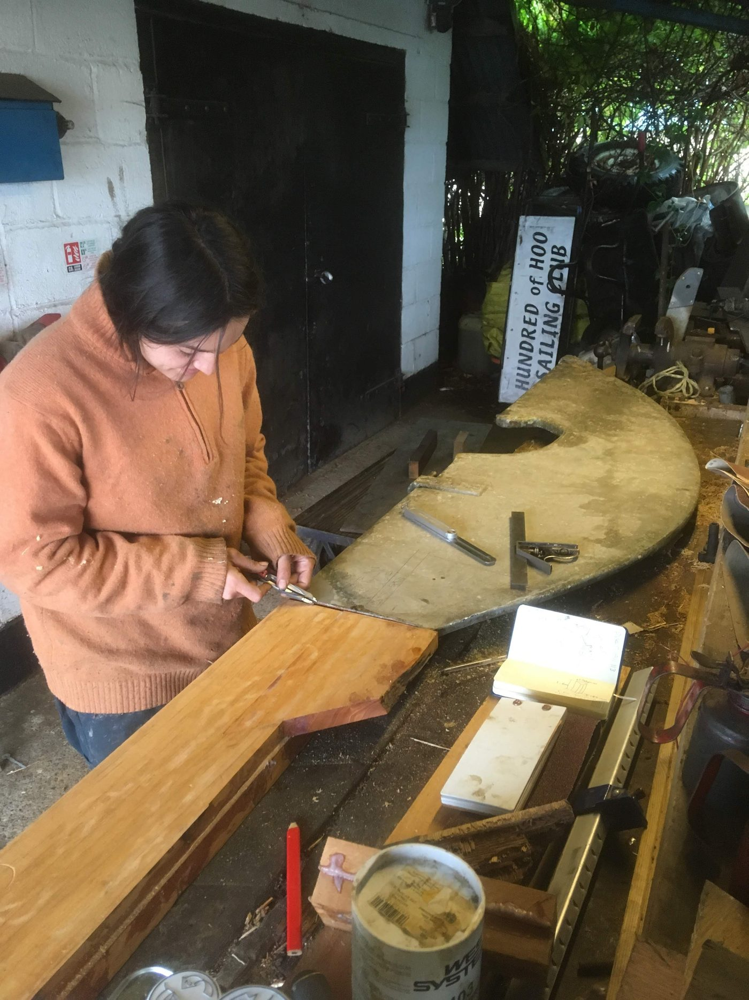
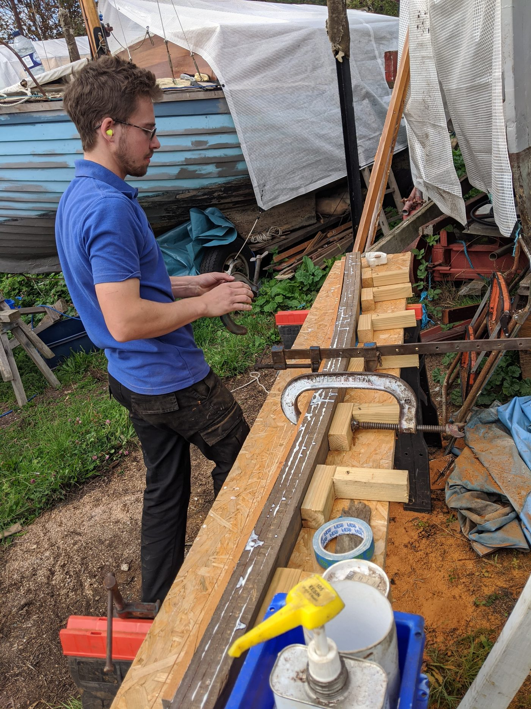
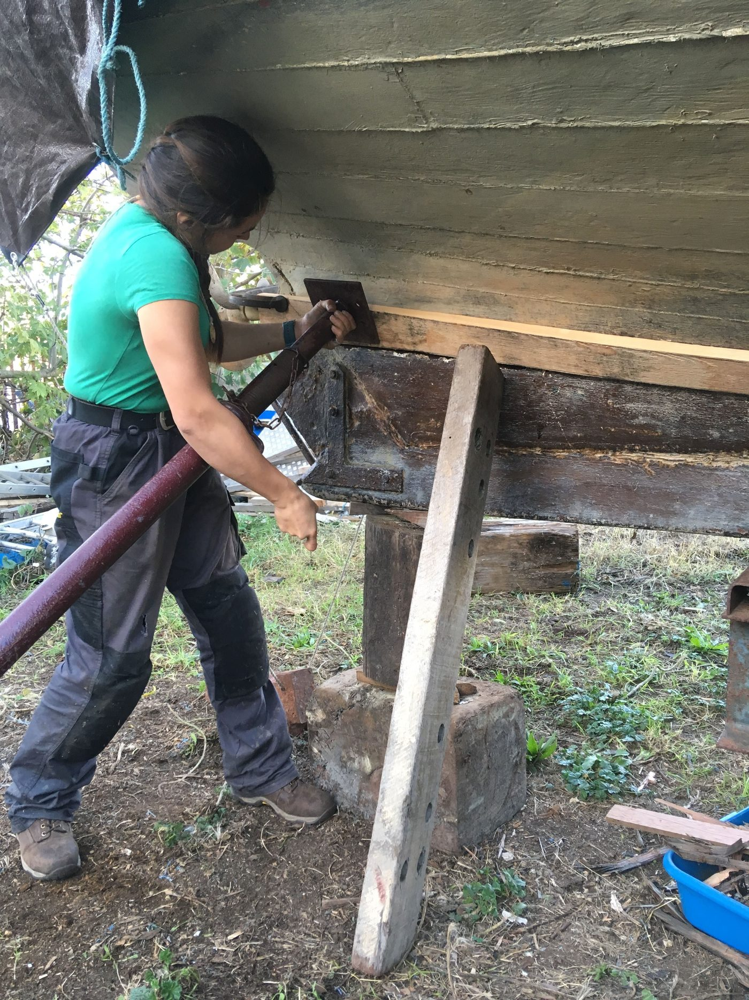
The team
Traditional skill, modern standards
Deben, Master Shipwright
Born into the world of wooden boats, Deben has spent his life preserving the craft of traditional shipbuilding. He began working alongside experienced shipwrights at fourteen, and made his first block that same year, the start of a lifelong pursuit of precision.
With over a decade of full-time experience, he blends traditional craftsmanship with modern methods to deliver work that honours the past and meets today's standards.
- Qualifications
- Level 3 City & Guilds Bench Joinery
Level 2 City & Guilds Engineering - Experience
- 10+ years full time
- Specialism
- Custom block making, structural timber
Natasha, Shipwright
Natasha discovered wooden boats while studying carpentry and joinery at college, where she first met Deben. Captivated by the craft, she joined him in mastering traditional boatbuilding.
With a sharp eye for detail and a natural flair for organisation, she works across restoration, maintenance and project coordination, and is most at home on the water.
- Qualifications
- Level 3 City & Guilds Bench Joinery
- Experience
- 7 years in traditional boatbuilding
- Specialism
- Restoration, joinery, project coordination
Get in touch
Call, email or send a message. We will get back to you as soon as we are off the tools. Winter refit slots book up early.
07557 733363